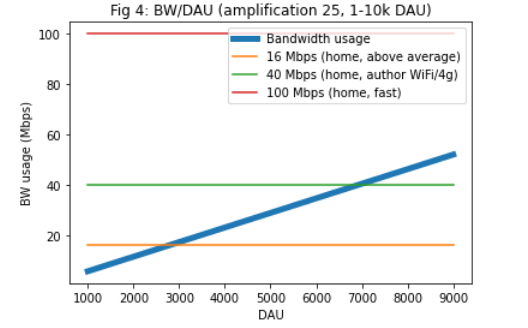

What's the Plan for Waku v2?
tldr: The Waku network is fragile and doesn’t scale. Here’s how to solve it.
NOTE: This post was originally written with Status as a primary use case in mind, which reflects how we talk about some problems here. However, Waku v2 is a general-purpose private p2p messaging protocol, especially for people running in resource restricted environments.
Problem
The Waku network is fragile and doesn’t scale.
As Status is moving into a user-acquisition phase and is improving retention rates for users they need the infrastructure to keep up, specifically when it comes to messaging.
Based on user acquisition models, the initial goal is to support 100k DAU in September, with demand growing from there.
With the Status Scaling Model we have studied the current bottlenecks as a function of concurrent users (CCU) and daily active users (DAU). Here are the conclusions.
**1. Connection limits**. With 100 full nodes we reach ~10k CCU based on connection limits. This can primarily be addressed by increasing the number of nodes (cluster or user operated). This assumes node discovery works. It is also worth investigating the limitations of max number of connections, though this is likely to be less relevant for user-operated nodes. For a user-operated network, this means 1% of users have to run a full node. See Fig 1-2.
**2. Bandwidth as a bottleneck**. We notice that memory usage appears to not be the primary bottleneck for full nodes, and the bottleneck is still bandwidth. To support 10k DAU, and full nodes with an amplification factor of 25 the required Internet speed is ~50 Mbps, which is a fast home Internet connection. For ~100k DAU only cloud-operated nodes can keep up (500 Mbps). See Fig 3-5.
**3. Amplification factors**. Reducing amplification factors with better routing, would have a high impact, but it is likely we’d need additional measures as well, such as topic sharding or similar. See Fig 8-13.
Figure 1-5:

See https://colab.research.google.com/drive/1Fz-oxRxxAFPpM1Cowpnb0nT52V1-yeRu#scrollTo=Yc3417FUJJ_0 for the full report.
What we need to do is:
- Reduce amplification factors
- Get more user-run full nodes
Doing this means the Waku network will be able to scale, and doing so in the right way, in a robust fashion. What would a fragile way of scaling be? Increasing our reliance on a Status Pte Ltd operated cluster which would paint us in a corner where we:
- keep increasing requirements for Internet speed for full nodes
- are vulnerable to censorship and attacks
- have to control the topology in an artifical manner to keep up with load
- basically re-invent a traditional centralized client-server app with extra steps
- deliberately ignore most of our principles
- risk the network being shut down when we run out of cash
Appetite
Our initial risk appetite for this is 6 weeks for a small team.
The idea is that we want to make tangible progress towards the goal in a limited period of time, as opposed to getting bogged down in trying to find a theoretically perfect generalized solution. Fixed time, variable scope.
It is likely some elements of a complete solution will be done separately. See later sections for that.
Solution
There are two main parts of the solution. One is to reduce amplification factors, and the other is incentivization to get more user run full nodes with desktop, etc.
What does a full node provide? It provides connectivity to the network, can act as a bandwidth “barrier” and be high or reasonably high availability. What this means right now is essentially topic interest and storing historical messages.
The goal is here to improve the status quo, not get a perfect solution from the get go. All of this can be iterated on further, for stronger guarantees, as well as replaced by other new modules.
Let’s first look at the baseline, and then go into some of the tracks and their phases. Track 1 is best done first, after which track 2 and 3 can be executed in parallel. Track 1 gives us more options for track 2 and 3. The work in track 1 is currently more well-defined, so it is likely the specifics of track 2 and 3 will get refined at a later stage.
Baseline
Here’s where we are at now. In reality, the amplification factor are likely even worse than this (15 in the graph below), up to 20-30. Especially with an open network, where we can’t easily control connectivity and availability of nodes. Left unchecked, with a full mesh, it could even go as high x100, though this is likely excessive and can be dialed down. See scaling model for more details.
Track 1 - Move to libp2p
Moving to PubSub over libp2p wouldn’t improve amplification per se, but it would be stepping stone. Why? It paves the way for GossipSub, and would be a checkpoint on this journey. Additionally, FloodSub and GossipSub are compatible, and very likely other future forms of PubSub such as GossipSub 1.1 (hardened/more secure), EpiSub, forwarding Kademlia / PubSub over Kademlia, etc. Not to mention security This would also give us access to the larger libp2p ecosystem (multiple protocols, better encryption, quic, running in the browser, security audits, etc, etc), as well as be a joint piece of infrastructured used for Eth2 in Nimbus. More wood behind fewer arrows.
See more on libp2p PubSub here: https://docs.libp2p.io/concepts/publish-subscribe/
As part of this move, there are a few individual pieces that are needed.
1. FloodSub
This is essentially what Waku over libp2p would look like in its most basic form.
One difference that is worth noting is that the app topics would not be the same as Waku topics. Why? In Waku we currently don’t use topics for routing between full nodes, but only for edge/light nodes in the form of topic interest. In FloodSub, these topics are used for routing.
Why can’t we use Waku topics for routing directly? PubSub over libp2p isn’t built for rare and ephemeral topics, and nodes have to explicitly subscribe to a topic. See topic sharding section for more on this.
Moving to FloodSub over libp2p would also be an opportunity to clean up and simplify some components that are no longer needed in the Waku v1 protocol, see point below.
Very experimental and incomplete libp2p support can be found in the nim-waku repo under v2: https://github.com/status-im/nim-waku
2. Simplify the protocol
Due to Waku’s origins in Whisper, devp2p and as a standalone protocol, there are a lot of stuff that has accumulated (https://rfc.vac.dev/spec/6/). Not all of it serves it purpose anymore. For example, do we still need RLP here when we have Protobuf messages? What about extremely low PoW when we have peer scoring? What about key management / encryption when have encryption at libp2p and Status protocol level?
Not everything has to be done in one go, but being minimalist at this stage will the protocol lean and make us more adaptable.
The essential characteristic that has to be maintained is that we don’t need to change the upper layers, i.e. we still deal with (Waku) topics and some envelope like data unit.
3. Core integration
As early as possible we want to integrate with Core via Stimbus in order to mitigate risk and catch integration issues early in the process. What this looks like in practice is some set of APIs, similar to how Whisper and Waku were working in parallel, and experimental feature behind a toggle in core/desktop.
4. Topic interest behavior
While we target full node traffic here, we want to make sure we maintain the existing bandwidth requirements for light nodes that Waku v1 addressed (https://vac.dev/fixing-whisper-with-waku). This means implementing topic-interest in the form of Waku topics. Note that this would be separate from app topics notes above.
5. Historical message caching
Basically what mailservers are currently doing. This likely looks slightly different in a libp2p world. This is another opportunity to simplify things with a basic REQ-RESP architecture, as opposed to the roundabout way things are now. Again, not everything has to be done in one go but there’s no reason to reimplement a poor API if we don’t have to.
Also see section below on adaptive nodes and capabilities.
6. Waku v1 <> Libp2p bridge
To make the transition complete, there has to a be bridge mode between current Waku and libp2p. This is similar to what was done for Whisper and Waku, and allows any nodes in the network to upgrade to Waku v2 at their leisure. For example, this would likely look different for Core, Desktop, Research and developers.
Track 2 - Better routing
This is where we improve the amplification factors.
1. GossipSub
This is a subprotocol of FloodSub in the libp2p world. Moving to GossipSub would allow traffic between full nodes to go from an amplification factor of ~25 to ~6. This basically creates a mesh of stable bidirectional connections, together with some gossiping capabilities outside of this view.
Explaining how GossipSub works is out of scope of this document. It is implemented in nim-libp2p and used by Nimbus as part of Eth2. You can read the specs here in more detail if you are interested: https://github.com/libp2p/specs/blob/master/pubsub/gossipsub/gossipsub-v1.0.md and https://github.com/libp2p/specs/blob/master/pubsub/gossipsub/gossipsub-v1.1.md


While we technically could implement this over existing Waku, we’d have to re-implement it, and we’d lose out on all the other benefits libp2p would provide, as well as the ecosystem of people and projects working on improving the scalability and security of these protocols.
2. Topic sharding
This one is slightly more speculative in terms of its ultimate impact. The basic idea is to split the application topic into N shards, say 10, and then each full node can choose which shards to listen to. This can reduce amplification factors by another factor of 10.
Note that this means a light node that listens to several topics would have to be connected to more full nodes to get connectivity. For a more exotic version of this, see https://forum.vac.dev/t/rfc-topic-propagation-extension-to-libp2p-pubsub/47
This is orthogonal from the choice of FloodSub or GossipSub, but due to GossipSub’s more dynamic nature it is likely best combined with it.
3. Other factors
Not a primary focus, but worth a look. Looking at the scaling model, there might be other easy wins to improve overall bandwidth consumption between full nodes. For example, can we reduce envelope size by a significant factor?
Track 3 - Accounting and user-run nodes
This is where we make sure the network isn’t fragile, become a true p2p app, get our users excited and engaged, and allow us to scale the network without creating an even bigger cluster.
To work in practice, this has a soft dependency on node discovery such as DNS based discovery (https://eips.ethereum.org/EIPS/eip-1459) or Discovery v5 (https://vac.dev/feasibility-discv5).
1. Adaptive nodes and capabilities
We want to make the gradation between light nodes, full nodes, storing (partial set of) historical messages, only acting for a specific shard, etc more flexible and explicit. This is required to identify and discover the nodes you want. See https://github.com/vacp2p/specs/issues/87
Depending on how the other tracks come together, this design should allow for a desktop node to identify as a full relaying node for some some app topic shard, but also express waku topic interest and retrieve historical messages itself.
E.g. Disc v5 can be used to supply node properties through ENR.
2. Accounting
This is based on a few principles:
- Some nodes contribute a lot more than other nodes in the network
- We can account for the difference in contribution in some fashion
- We want to incentivize nodes to tell the true, and be incentivized not to lie
Accounting here is a stepping stone, where accounting is the raw data upon which some settlement later occurs. It can have various forms of granularity. See https://forum.vac.dev/t/accounting-for-resources-in-waku-and-beyond/31 for discussion.
We also note that in GossipSub, the mesh is bidrectional. Additionally, it doesn’t appears to be a high priority issue in terms of nodes misreporting. What is an issue is having people run full nodes in the first place. There are a few points to that. It has to be possible in the end-user UX, nodes have to be discovered, and it has to be profitable/visible that you are contributing. UX and discovery are out of scope for this work, whereas visibility/accounting is part of this scope. Settlement is a stretch goal here.
The general shape of the solution is inspired by the Swarm model, where we do accounting separate from settlement. It doesn’t require any specific proofs, but nodes are incentivized to tell the truth in the following way:
- Both full node and light node do accounting in a pairwise, local fashion
- If a light node doesn’t ultimately pay or lie about reporting, they get disconnected (e.g.)
- If a full node doesn’t provide its service the light node may pick another full node (e.g.)
While accounting for individual resource usage is useful, for the ultimate end user experience we can ideally account for other things such as:
- end to end delivery
- online time
- completeness of storage
This can be gradually enhanced and strengthened, for example with proofs, consistency checks, Quality of Service, reputation systems. See https://discuss.status.im/t/network-incentivisation-first-draft/1037 for one attempt to provide stronger guarantees with periodic consistency checks and a shared fund mechanism. And https://forum.vac.dev/t/incentivized-messaging-using-validity-proofs/51 for using validity proofs and removing liveness requirement for settlement.
All of this is optional at this stage, because our goal here is to improve the status quo for user run nodes. Accounting at this stage should be visible and correspond to the net benefit a node provides to another.
As a concrete example: a light node has some topic interest and cares about historical messages on some topic. A full node communicates envelopes as they come in, communicates their high availability (online time) and stores/forward stored messages. Both nodes have this information, and if they agree settlement (initially just a mock message) can be sending a payment to an address at some time interval / over some defined volume. See future sections for how this can be improved upon.
Also see below in section 4, using constructs such as eigentrust as a local reputation mechanism.
3. Relax high availability requirement
If we want desktop nodes to participate in the storing of historical messages, high availability is a problem. It is a problem for any node, especially if they lie about it, but assuming they are honest it is still an issue.
By being connected to multiple nodes, we can get an overlapping online window. Then these can be combined together to get consistency. This is obviously experimental and would need to be tested before being deployed, but if it works it’d be very useful.
Additionally or alternatively, instead of putting a high requirement on message availability, focus on detection of missing information. This likely requires re-thinking how we do data sync / replication.
4. Incentivize light and full nodes to tell the truth (policy, etc)
In accounting phase it is largely assumed nodes are honest. What happens when they lie, and how do we incentivize them to be honest? In the case of Bittorrent this is done with tit-for-tat, however this is a different kind of relationship. What follows are some examples of how this can be done.
For light nodes:
- if they don’t, they get disconnected
- prepayment (especially to “high value” nodes)
For full nodes:
- multiple nodes reporting to agree, where truth becomes a shelling point
- use eigentrust
- staking for discovery visibility with slashing
5. Settlement PoC
Can be done after phase 2 if so desired. Basically integrate payments based on accounting and policy.
Out of scope
- We assume the Status Base model requirements are accurate.
- We assume Core will improve retention rates.
- We assume the Stimbus production team will enable integration of nim-waku.
- We assume Discovery mechanisms such as DNS and Discovery v5 will be worked on separately.
- We assume Core will, at some point, provide an UX for integrating payment of services.
- We assume the desktop client is sufficiently usable.
- We assume Core and Infra will investigate ways of improving MaxPeers.